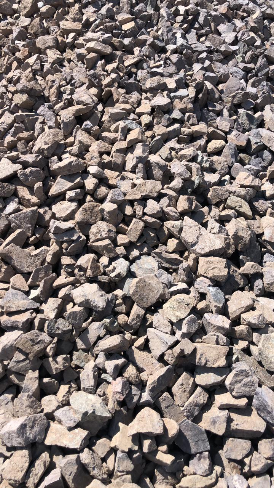
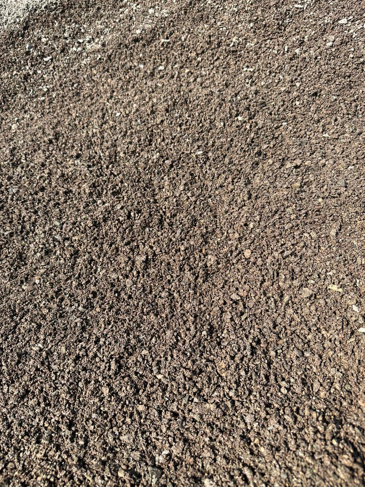
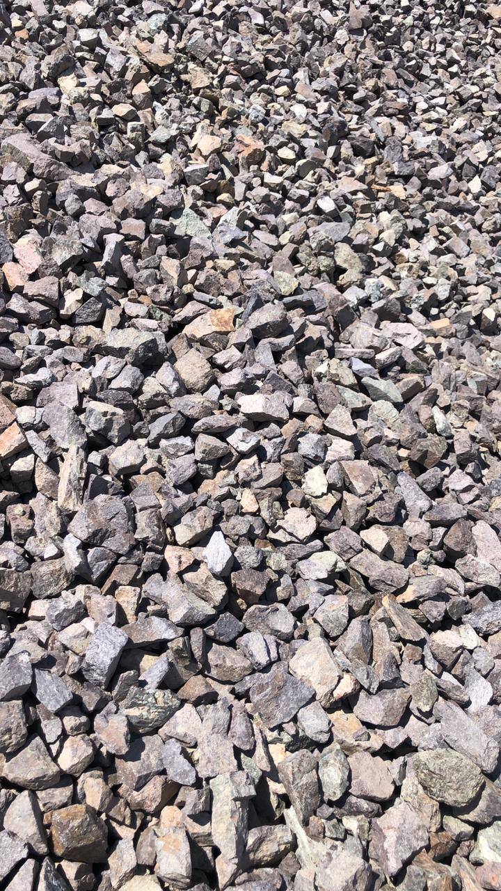
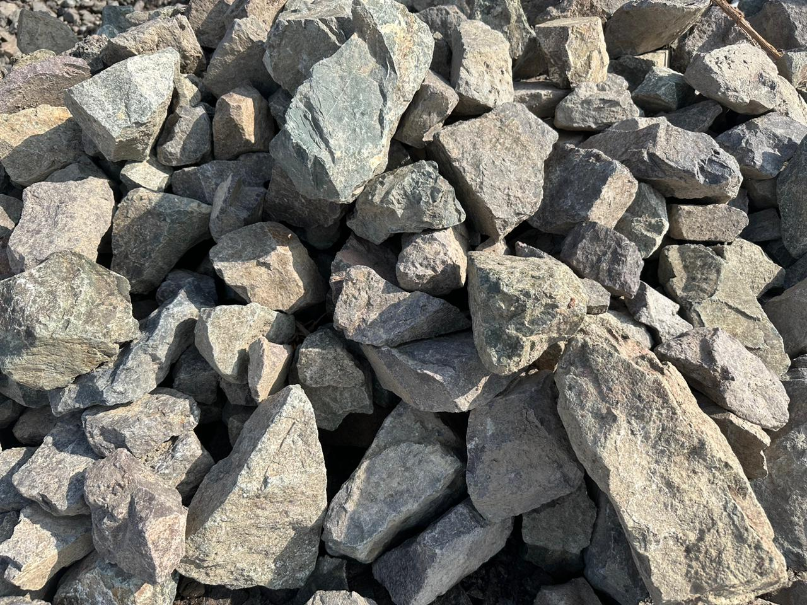
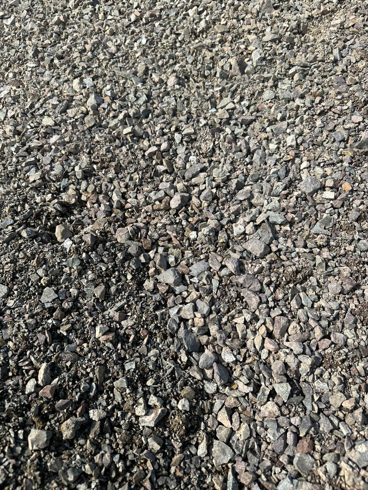
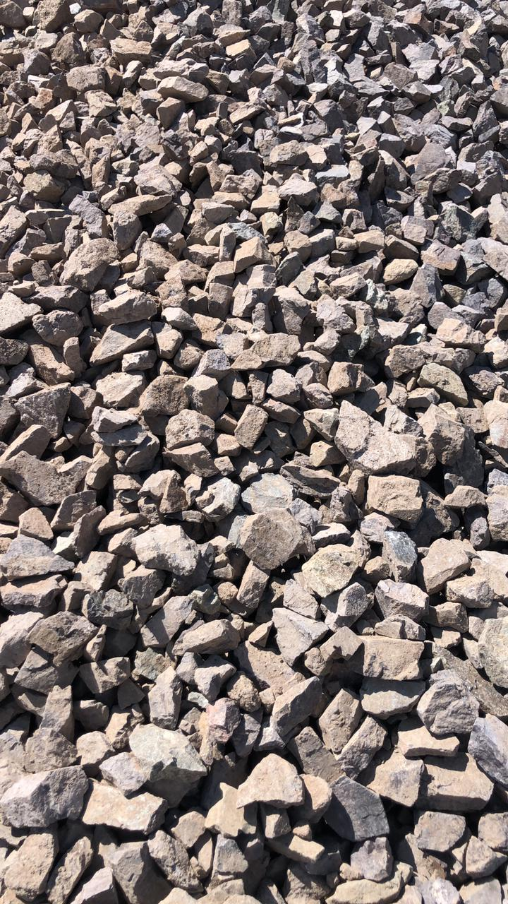
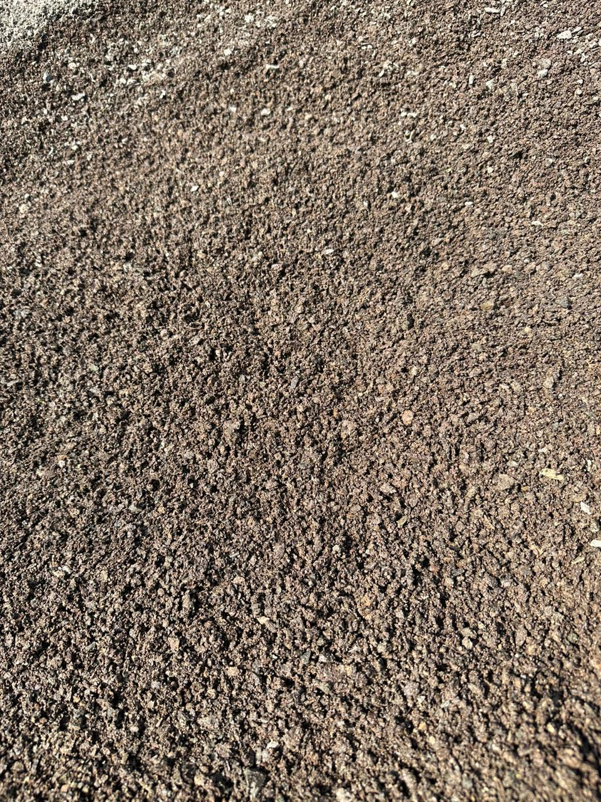
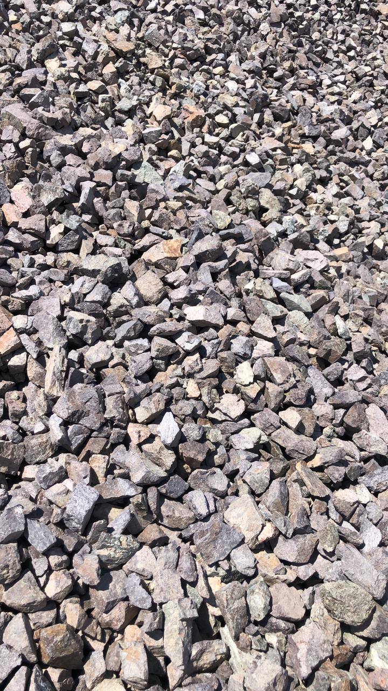
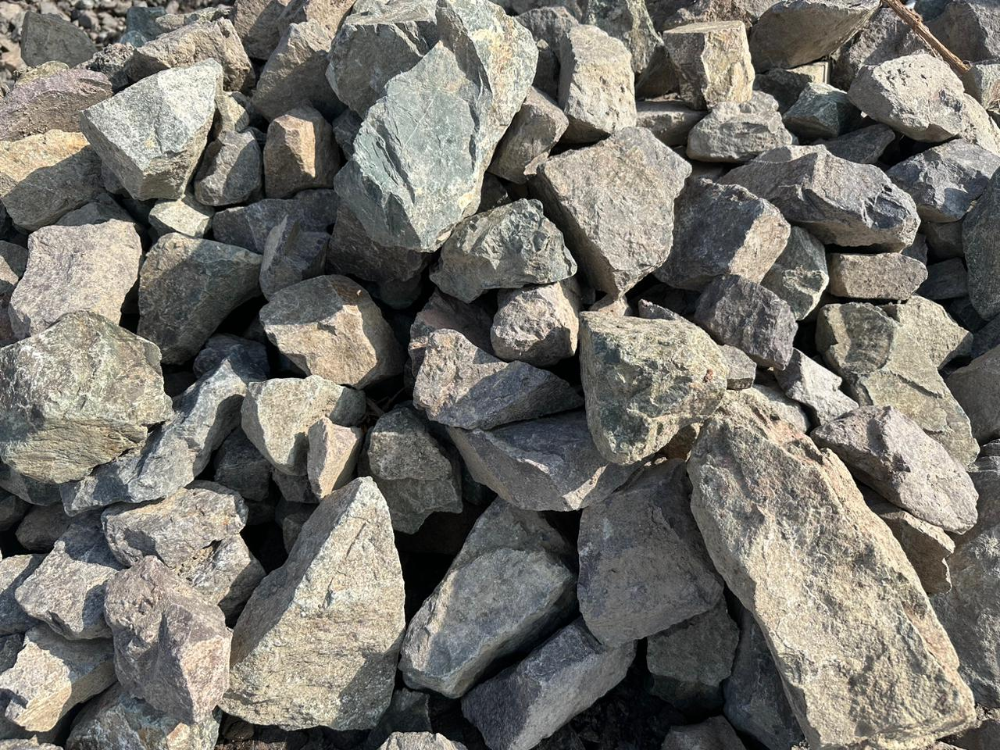
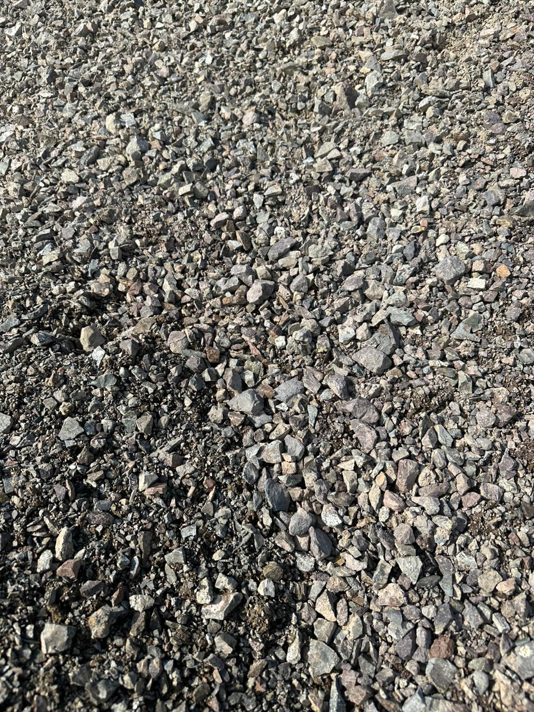

Производитель щебня, песка и строительных материалов
Основано в 1957 году. Мощности переработки бутового камня — до 1 000 000 тонн в год.
Связаться с намиО предприятии
ТОО «АКНМ ТК» — одно из старейших предприятий строительной отрасли Казахстана. Основано в 1957 году как Алма-Атинский комбинат нерудных материалов (АКНМ). Сегодня предприятие специализируется на добыче, переработке и поставке щебня, песка, песчано-гравийных смесей и бетонных изделий.

Годовая мощность переработки бутового камня — до 1 000 000 тонн. Производственная база — более 15 гектаров. Современные дробильно-сортировочные линии Sandvik и HYDROCONE.
Продукция сертифицирована и проходит регулярную лабораторную проверку. Контроль подтверждён британской лабораторией «SANDBERG» (Лондон).
Анализ рынка
Обзор рынка
Доля ТОО «АКНМ ТК» в Алматы и Алматинской области более 40%
Конкурентная среда
Ключевое конкурентное преимущество: Уникальность породы парфирит М–1200+
По шкале протодьяконова 2 категория коэффициент крепости 15, технология переработки камня, широкий ассортимент продукции.
Тенденции и возможности
Растущий спрос на экологически чистые и прочные строительные материалы.
Возможности для экспорта продукции в страны Центральной Азии.
География добычи
ТОО «АКНМ ТК» разрабатывает карьеры и производит высококачественную продукцию в основном регионе Казахстана с суммарными запасами:
- «Котур Булакское» — 10 млн. м³
- «Капчагайское 2» — 8 млн. м³
- «Первомайское 2 Южный» — 4 млн. м³
Эти запасы позволяют ТОО «АКНМ ТК» быть ведущим поставщиком строительных материалов в регионе, поддерживая крупные строительные проекты и инфраструктуру Казахстана.
Достижения и Ключевые проекты
ТОО «АКНМ ТК» активно участвует в реализации крупных строительных и инфраструктурных проектов по всему Казахстану, подтверждая свою репутацию как надежного поставщика высококачественных строительных материалов, отмеченного почетными наградами и сертификатами.


Продукция
Продукция ТОО «АКНМ ТК» находит широкое применение в строительстве, дорожном хозяйстве, железнодорожном строительстве и других отраслях, благодаря высокому качеству, экологической безопасности и соответствию современным стандартам.
| Наименование продукции |
|---|
| Щебень из плотных горных пород для строительных работ — ГОСТ 8267-93 |
| Щебень из плотных горных пород для балластного слоя железнодорожного пути — ГОСТ 7392-2002 |
| Смеси щебёночно-песчаные для покрытий и оснований автомобильных дорог и аэродромов — ГОСТ 25607-94 |
| Песок для строительных работ — ГОСТ 8736-93 |
| Известняковый или доломитовый щебень для строительных работ — ГОСТ 8267-93 |
Технологические преимущества

Мойка щебня
Удаление пыли и мелких частиц для повышения качества бетона и асфальта.
Современное оборудование
Дробильно-сортировочные установки Sandvik и HYDROCONE.
Контроль качества
Многоступенчатая проверка каждой партии, международная сертификация.
Надёжность
Более 65 лет на рынке, стабильное качество, доверие крупнейших заказчиков.
Месторождения
| Название | Объем | Продукция |
|---|---|---|
| Котур-Булакское | 10 млн м³ | щебень, порфириты |
| Капчагайское-2 | 8 млн м³ | строительный песок |
| Первомайское-2 Южное | 4 млн м³ | мытый песок |
Галерея


 









Наши партнёры


Контакты
Адрес:
РК, Алматинская обл., Талгарский р-н, с. Бесагаш, ул. Чехова 9г
Телефоны:
+7 (727) 387‒40‒02
+7 (727) 391‒51‒12
+7‒775‒734‒12‒13
+7‒700‒691‒04‒74
Email: info@aknm.example